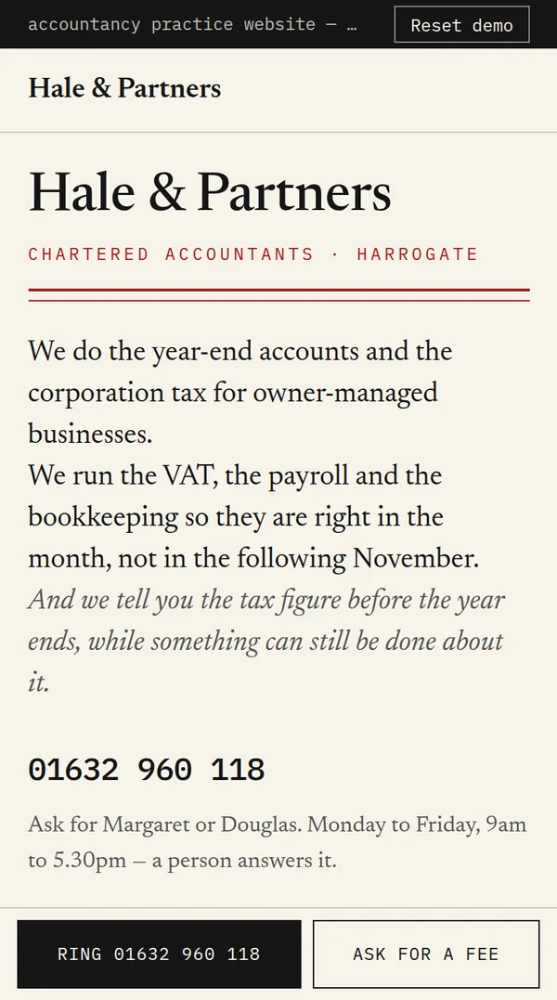
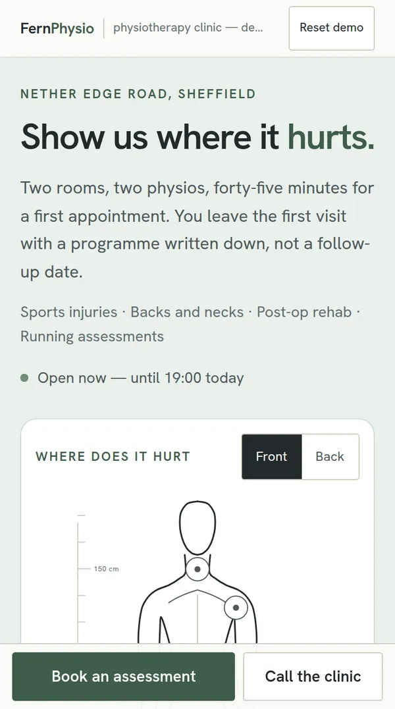
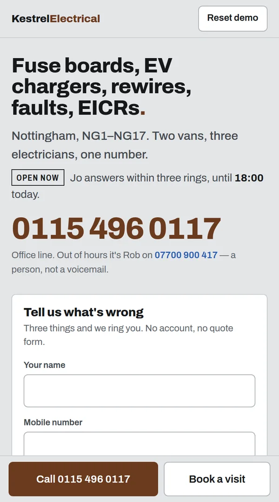

Thirty-six builds.
All of them running.
12 full websites and 24 business tools for service businesses, each made for an invented business so no client is on show. Tap any of them to use it full screen. Not sure what to press? It shows you.
Start with these four
Two tools and two websites that show the range. Each card plays what the build does; tap it to try it yourself.

Websites
Twelve full websites in four lanes. A boxing club and an accountant should not get the same site, so the lane comes first: how loud it is, how much moves, how fast it gets to the phone number. How the lanes work
Loud
Big, kinetic, confident. The type is the image and one moment does the talking.
Gyms, bars, studios, events: anyone who needs to be noticed before they are compared.
Motion
The page is the film: scroll-driven sequences, letterboxes, timecodes, drawn frames.
Film, video, drone and photography businesses: anyone selling moving pictures. MARÉE — Sel ObscurInk through water, and a page that darkens as you descend.Website · Fragrance house
MARÉE — Sel ObscurInk through water, and a page that darkens as you descend.Website · Fragrance house
 Long ExposureA film company's site that plays like a film you can scrub.Website · Film production company
Long ExposureA film company's site that plays like a film you can scrub.Website · Film production company
 OverheadScroll to climb — the valley draws itself in contours as you rise.Website · Drone survey & filming
OverheadScroll to climb — the valley draws itself in contours as you rise.Website · Drone survey & filmingQuiet
Plain, calm, expensive. Almost nothing moves; the typography does the work.
Accountants, clinics, architects, solicitors: businesses whose customers are buying reassurance. Atelier VossA studio site with no photographs at all.Website · Architecture practice
Atelier VossA studio site with no photographs at all.Website · Architecture practice

Hale & PartnersA year-end that settles, and the deadlines counted from today.Website · Accountant
Fern PhysioA drawn body with ten tappable points, and a booking flow behind it.Website · Physiotherapy clinicDirect
Conversion first. One-tap call, a three-field form, the service area, no fluff.
Trades and local services that live off the phone. CadenceThe page is an operations board that never stops running.Website · Software company
CadenceThe page is an operations board that never stops running.Website · Software company

Kestrel ElectricalAn electrician's page built as a fuse board — every job is a breaker.Website · Electrician Kerb & CamberA UK number plate you type into, and the MOT date that comes back.Website · GarageTools
Software that sits between the customer and the diary. Broad tools fit any business that takes enquiries; specific ones are built around one trade’s day. More on the tools
Broad
Works for any service business: booking, quotes, the pipeline, follow-up, reviews.
Any business that takes enquiries and puts jobs in a diary. Northgate Quote EngineA quote that assembles itself while the customer answers.Tool · Kitchen fitter
Northgate Quote EngineA quote that assembles itself while the customer answers.Tool · Kitchen fitter
 Redgate Job & Lead SystemEvery enquiry, where it came from, and what happened to it.Tool · Heating & plumbing
Redgate Job & Lead SystemEvery enquiry, where it came from, and what happened to it.Tool · Heating & plumbing
 Halcyon DispatchDrag a job to another engineer and the week re-plans itself.Tool · Heating dispatch
Halcyon DispatchDrag a job to another engineer and the week re-plans itself.Tool · Heating dispatch
 LedgerlineA live A4 page that reflows as you type.Tool · Any trade
LedgerlineA live A4 page that reflows as you type.Tool · Any trade
 Kerbside ScorecardMarks a Google Business Profile like an exam.Tool · Any local business
Kerbside ScorecardMarks a Google Business Profile like an exam.Tool · Any local business
 StopcockWhat unanswered calls cost you a year.Tool · Any trade
StopcockWhat unanswered calls cost you a year.Tool · Any trade
 Fenwick BookingService, slot, deposit, confirmed — no phone tag.Tool · Heating engineer
Fenwick BookingService, slot, deposit, confirmed — no phone tag.Tool · Heating engineer
 RingsbackMissed-call text-back console: the text goes out, the reply lands here.Tool · Any service business
RingsbackMissed-call text-back console: the text goes out, the reply lands here.Tool · Any service business
 StarboardAsks for the review at the right moment, then helps you reply to it.Tool · Any local business
StarboardAsks for the review at the right moment, then helps you reply to it.Tool · Any local business
 SlateYour own price book, and the estimate it builds in a minute.Tool · Any service business
SlateYour own price book, and the estimate it builds in a minute.Tool · Any service business
 TriageEvery enquiry, every channel, sorted by who has waited longest.Tool · Any service business
TriageEvery enquiry, every channel, sorted by who has waited longest.Tool · Any service business
 DoorstepThe page the customer opens on their phone after they have booked.Tool · Any service business
DoorstepThe page the customer opens on their phone after they have booked.Tool · Any service business
 ClockcardStaff clock in from the van; the office watches the week fill up.Tool · Any service business
ClockcardStaff clock in from the van; the office watches the week fill up.Tool · Any service businessSpecific
Built around one trade’s actual day: its diary, its paperwork, its reminders.
One trade at a time: heating, garages, salons, restaurants, roofing, rounds. Mortgage LabWhat an overpayment really saves, month by month.Tool · Mortgage broker
Mortgage LabWhat an overpayment really saves, month by month.Tool · Mortgage broker
 Payslip LabGross to net, and the 60% trap nobody explains.Tool · Accountant
Payslip LabGross to net, and the 60% trap nobody explains.Tool · Accountant
 TurnoverDrag the tape line across a 2011 site and its rebuild.Tool · Roofer
TurnoverDrag the tape line across a 2011 site and its rebuild.Tool · Roofer
 JobsheetFill it in from the van, the customer report writes itself.Tool · Any trade with a van
JobsheetFill it in from the van, the customer report writes itself.Tool · Any trade with a van
 ShiftbookClick a cell to place a shift. Clashes flag as you go.Tool · Hair salon
ShiftbookClick a cell to place a shift. Clashes flag as you go.Tool · Hair salon
 Boiler BookThirty boilers sorted by what's due, with the chasing done for you.Tool · Heating engineer
Boiler BookThirty boilers sorted by what's due, with the chasing done for you.Tool · Heating engineer
 MOT MinderEvery car the garage has seen, and the texts that bring them back.Tool · Garage
MOT MinderEvery car the garage has seen, and the texts that bring them back.Tool · Garage
 ChairsideRebooks the client at the counter and refills the slots that fall out.Tool · Hair salon
ChairsideRebooks the client at the counter and refills the slots that fall out.Tool · Hair salon
 TurntableThe floor, the queue at the door and the deposit rule, on one screen.Tool · Restaurant
TurntableThe floor, the queue at the door and the deposit rule, on one screen.Tool · Restaurant
 RooflineA postcode and seven taps draw the roof, then price it.Tool · Roofer
RooflineA postcode and seven taps draw the roof, then price it.Tool · Roofer
 RoundsheetThe round in door order, with a DONE big enough for one thumb.Tool · Window cleaner
RoundsheetThe round in door order, with a DONE big enough for one thumb.Tool · Window cleaner